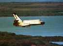
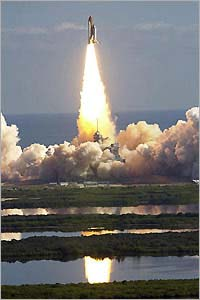
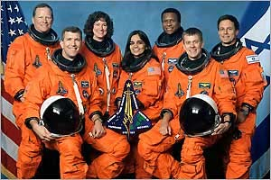
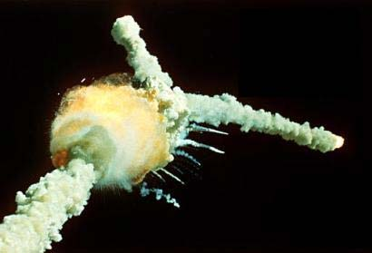
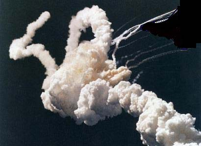

|
Created: 02/02/03.
Revised: 10/31/09. |
|
 |
The February 1, 2003 was the foreseen Landing Date of Columbia Mission's STS-117. It has never landed, and for this reason this page is a modest homage to the wonderful and exceptional people which the mankind has lost in this terrible disaster.
8:15 a.m. EST -- Columbia fires braking rockets, streaks toward a planned touchdown at Kennedy Space Center, Runway 33.

8:53 a.m. -- NASA loses temperature measurements for the shuttle's left hydraulic system.
8:58 a.m. -- NASA loses measurements from three temperature sensors on the shuttle's left side.
8:59 a.m. -- Eight more temperature measures and pressure measures for left inboard and outboard tires are lost. Crew is able to acknowledge remaining visible measurement on display panel. In response to request for tire pressure status, Columbia replies: "Roger, uh, ...." This is the final transmission from the crew.
9 a.m. -- Mission Control suddenly loses all data and voice contact with Columbia 207,135 feet above north central Texas, traveling at 12,500 mph. Residents of Texas, Arkansas and Louisiana report hearing a "big bang" and seeing flames in the sky.

Columbia Commander Col. Rick Husband
Commander Rick Husband, 45, was an Air Force colonel from Amarillo, Texas. The former test pilot was selected as an astronaut in 1994 on his fourth try. He made up his mind as a child that that was what he was going to do with his life.
"It's been pretty much a lifelong dream and just a thrill to be able to get to actually live it out," the married father of two said in an interview before Columbia's launch, his second spaceflight.
Shuttle Pilot Cmdr. William McCool
Pilot William McCool, 41, was a Navy commander who grew up in Lubbock, Texas. He graduated second in his 1983 class at the Naval Academy, went on to test pilot school and became an astronaut in 1996.
McCool was an experienced Navy pilot with more than 2,800 hours in flight. But two weeks into his first space trip, he was bursting with amazement.
"There is so much more than what I ever expected," McCool told National Public Radio on Jan. 30 from the space shuttle Columbia. "It's beyond imagination, until you actually get up and see it and experience it and feel it."
McCool was married with three sons, ages 14, 19 and 22.
Shuttle Payload Commander Lt. Col. Michael Anderson
Payload commander Michael Anderson, 43, was the son of an Air Force man and grew up on military bases. He was flying for the Air Force when NASA chose him in 1994 as one of only a handful of black astronauts. He traveled to Russia's Mir space station in 1998.
The lieutenant colonel, who lived in Spokane, Wash., was in charge of Columbia's dozens of science experiments.
"I take the risk because I think what we're doing is really important. If you look at this research flight and if you really take an opportunity to look at each experiment ... the potential yield that we have is really tremendous," he said.
He added: "For me, it's the fact that what I'm doing can have great consequences and great benefits for everyone, for mankind."

Shuttle Columbia Engineer Dr. Kapana Chawla
Kalpana Chawla, 41, emigrated to the United States from India in 1980s and became an astronaut in 1994. At the time, she wanted to design aircraft -- the space program was the furthest thing from her mind.
"That would be too far-fetched," the engineer had said. But "one thing led to another" and she was chosen as an astronaut after working at NASA's Ames Research Center and Overset Methods Inc. in Northern California.
Chawla was a heroine in India, which has launched satellites for years and is preparing for a moon orbit this decade. One Indian news agency even tracked Columbia's flight so it could tell readers the exact minute they could wave to the skies to hail their countrywoman.
"When you look at the stars and the galaxy, you feel that you are not just from any particular piece of land, but from the solar system," Chawla said in a 1998 interview with the newspaper India Today.
Shuttle Columbia Pilot Capt. David Brown
David Brown, 46, was a Navy captain, pilot and doctor. He joined the Navy after a medical internship, then went on to fly the A-6E Intruder and F-18. He became an astronaut in 1996. Columbia's mission was his first spaceflight.
When asked in a recent interview about the risk of flying in space, Brown, who was single, said: "I made a decision that is part of my job, I would incur some real risk as a routine part of my job when I joined the Navy and started flying ... airplanes off of ships, particularly airplanes off of ships at night. And I think that was a decision that I made some years ago and the decision to go fly in space is just an extension of that."
Shuttle Columbia Physician Cmdr. Dr. Laurel Clark
Laurel Clark, 41, was a diving medical officer aboard submarines and then a flight surgeon before she became an astronaut in 1996. She had been on board Columbia to help with science experiments.
"I think my family has a fairly practical and pragmatic view of this whole thing, and that's that the actual launching into space is much more dangerous than any of the other security concerns," said Clark, who lived in Racine, Wis., and was married with an 8-year-old son.
She added: "There's a lot of different things that we do during life that could potentially harm us and I choose not to stop doing those things."

Shuttle Columbia Payload Specialist Col. Ilan Ramon
Ilan Ramon, 48, was a colonel in Israel's air force and the first Israeli in space. His mother and grandmother survived the Auschwitz death camps, and his father fought for Israel's statehood alongside his grandfather. Ramon fought in the Yom Kippur War in 1973 and Lebanon War in 1982.
He served as a fighter pilot in the 1970s, 1980s and early 1990s, flying F-16s and F-4s. He was chosen as Israel's first astronaut in 1997, then moved to Houston the next year to train for shuttle flight.
His wife, Rona, and their four children -- ages 5 to 15 -- live in Tel Aviv.
Before Columbia launched, Ramon had repeatedly said he was not nervous or afraid about his safety aboard the space shuttle.
"I think the only thing that will worry me is the launch sequence and the systems and the launch, being launched on time. The tenseness is there because everybody wants to be launched on time with no failures. That's it. Once you're there, you're there," he said in a recent interview.
Source: http://www.foxnews.com/story/0,2933,77254,00.htmlHighly impressed by this tragedy, the SNA has decided to issue a sheet in the honor of disappeared cosmonauts. The commemorative minisheet was issued on the 2nd of February 2003, a day after the catastrophe. The only issued piece will be exposed at a later time in the Postal Museum.
Please click on the sheet for a more detailed image.
Note. At present we haven't images of Columbia's explosion, and for this reason we show above as remembrance images of the 1986 Challenger's disaster.
|
Created: 02/02/03.
Revised: 10/31/09. |
|